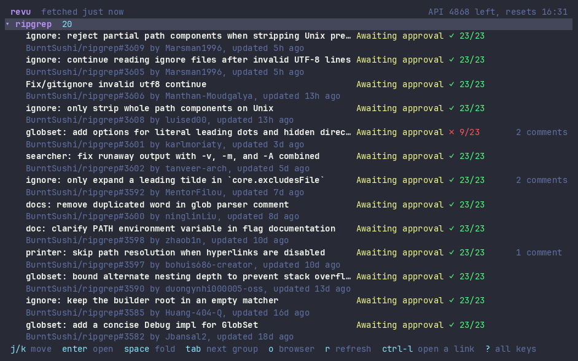

> Your pull requests,
reviewed in the terminal.
revu collects the GitHub pull requests that wait on you, opens each one the way GitHub's Overview does, and shows the diff the way you like to read it. Review, comment on lines and label without opening the browser.
curl -fsSL https://cjhwong.github.io/revu/install.sh | shor: brew install CJHwong/tap/revu, or cargo install --git https://github.com/CJHwong/revu
macOS and Linux. Needs the GitHub CLI (gh), logged in, and git. revu stores no token of its own.

The inbox, a pull request's Overview, three diff views, find, and the key list.
features
what you get without leaving the terminal
[01]An inbox like GitHub's
Your pull requests in groups, each one a GitHub search you write in the config. Every row shows its review state, checks and comments.
j/k move, tab next group, ctrl-l open a link
[02]The whole Overview
The description, comments and review threads with the code under each, a merge box, reviewers with their state, and what changed since you last commented.
enter fold, f filter, n hide bots
[03]Three diff views
Word diff, delta and difftastic, with syntax colors. Views you have not installed drop out, and narrow panes switch difftastic to one column. Files with review threads show how many.
m switch view, w wrap, enter full file
[04]Find, then search
Find text in every changed file, with ^ and $ anchors and completion from the diff's words and file names. Or search the whole repo at the PR's head.
/ find, n/N next, s search the repo
[05]Review without the browser
Select a line or a range to comment on in your pending review, copy as a Markdown diff, or open on GitHub. Submit the review as a comment, an approval or a change request. Edit labels and mark files, or whole folders, viewed.
S select lines, y copy, R review, v viewed
[06]Your clones stay as they are
Diffs come from your local clone. revu fetches a PR's commits into its own refs and never checks out a branch or touches your working tree.
needs workspace_dir in the config: one folder or a list
keys
enough for a first session. press ? in the app for the rest
Inbox
| j / k | move |
| enter | open the pull request |
| space | fold the group |
| ctrl-l | open a link or owner/repo#123 |
| r | refresh |
| , | settings |
Pull request
| 1 - 4 | Overview, Commits, Checks, Files |
| R | submit a review |
| e | labels |
| s | search the repo |
| o | open in the browser, at the file or line |
| h | back to the inbox |
Diff
| m | next diff view |
| / | find in every changed file |
| S | select lines: comment, copy, open |
| y | copy the file path |
| v | mark the file viewed |
| ] | next unviewed file |
| t | tree or flat list |
install
a single binary for macOS and Linux
- Install and log in to the GitHub CLI.
gh auth login - Install revu. The script puts it in
~/.local/bin; setREVU_INSTALL_DIRto pick another folder.curl -fsSL https://cjhwong.github.io/revu/install.sh | shor with Homebrew:
brew install CJHwong/tap/revuor from source, with Rust:
cargo install --git https://github.com/CJHwong/revu - Run it. The first run writes
~/.config/revu/config.yaml. Setworkspace_dirto the folder, or a list of folders, that holds your clones, so the diffs can load.revu
optional, for the other diff views
deltaanddifftastic: two more ways to draw the diffbat: syntax colors in the word diff and in whole files